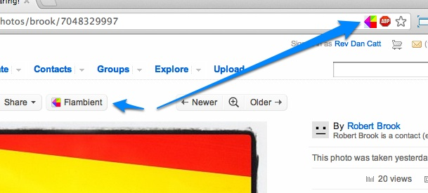
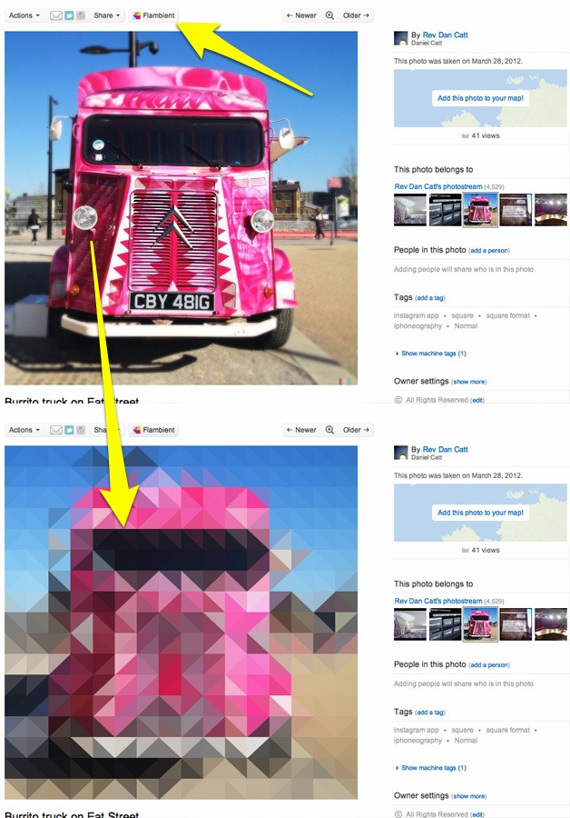
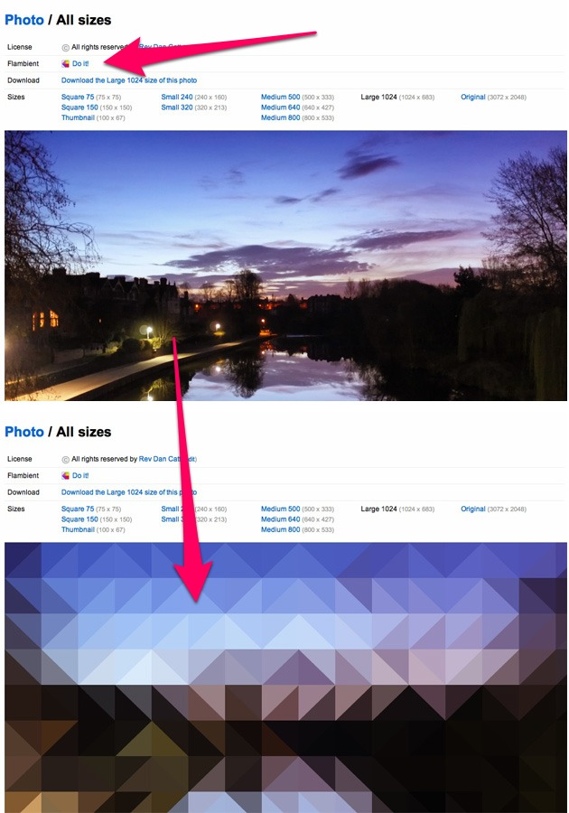

Install.
Flambient is a Chrome extension that adds a button to Flickr's Photo & All Sizes pages that lets you add the "pxl" image effect.
Click to add this extension to Chrome.

About
pxl. is an iPhone app that allows you to create abstract compositions out of photos. This extension allows you to add that effect to photos on Flickr.
Just install the extension and click the Flambient button on the page or the icon in the address bar when it appears.

It also works on the All Sizes page, so you can add the effect to the large or even original size (although that one takes a little longer).

Sourcecode
Flambient grew out of the Guardian Ambient Headline Radio project, which is where it got its name from Flickr + Ambient = Flambient.
You can read more about that project here: The pxl effect with javascript and canvas (and maths) and download its source code here: github.com/revdancatt/GuardianAmbientHeadlineRadio.
The main image processing code was ported (realativily unmodified) to this Chrome extension and you can find the source to this code over here: https://github.com/revdancatt/Flambient, if you want to see what weird hoops you have to jump through to get canvas to work with Chrome extensions.